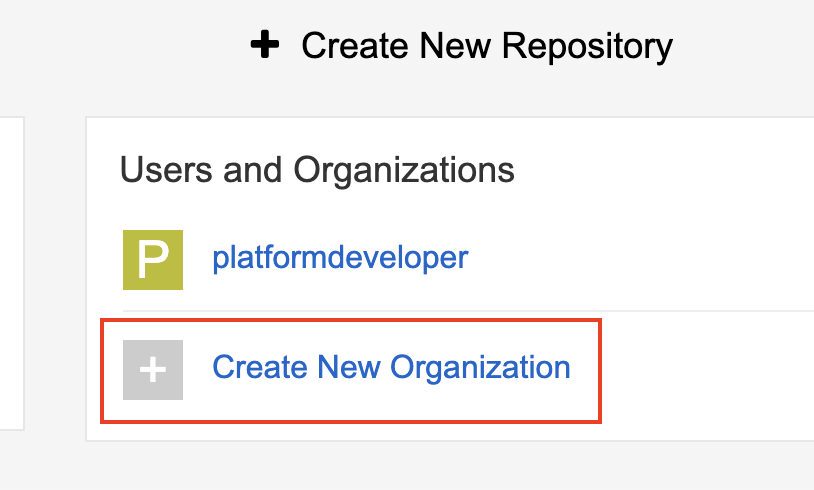
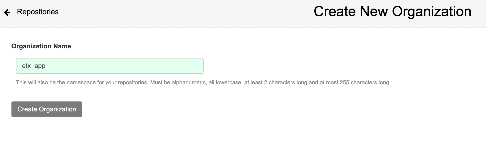
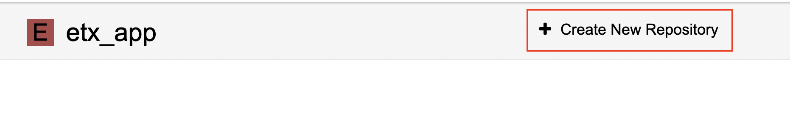
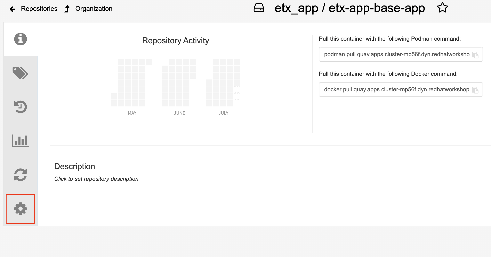
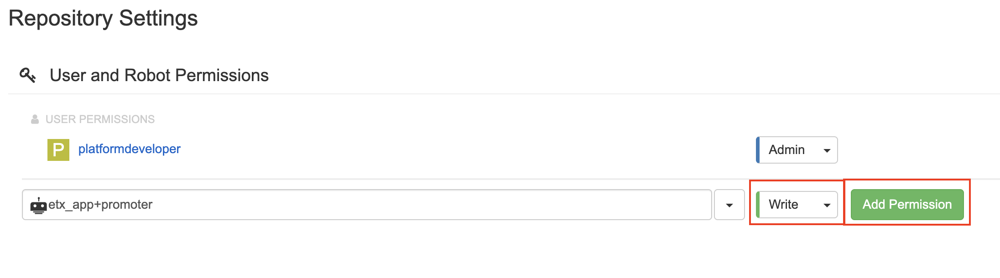
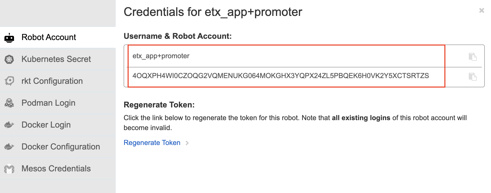
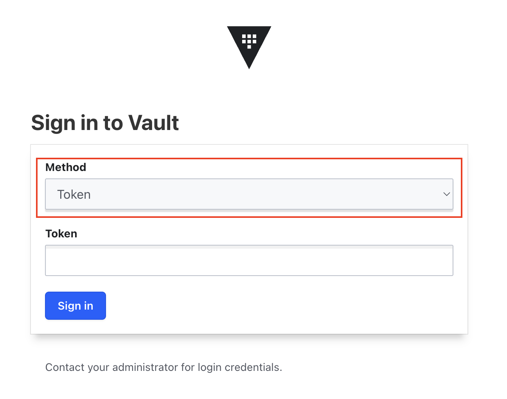
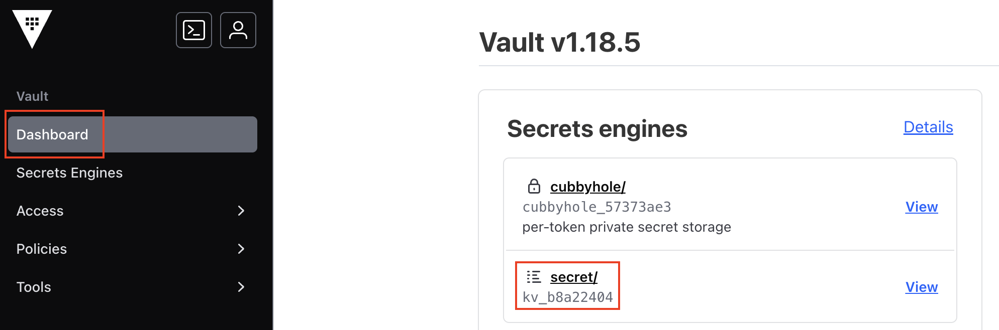
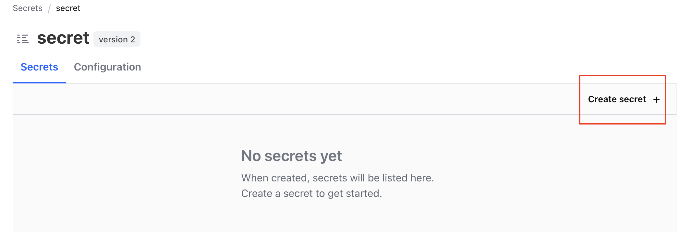

Lab 1: Promotion Pipeline
Overview
In the previous exercises, you set up a CI pipeline that builds container images and deploys them to the dev environment automatically. Now you’ll create a promotion pipeline that moves tested images from dev to staging on the secondary cluster.
This promotion pipeline:
-
Copies container images from the internal registry to Quay (for cross-cluster access)
-
Updates the GitOps repository with the new image tag for staging
-
Triggers Argo CD to sync the staging environment on the secondary cluster
Prerequisites
Before starting this exercise, ensure you have completed:
-
Secondary cluster enrollment (instructions below)
You should have:
-
A working CI pipeline that builds and pushes images
-
Argo CD managing both dev and stage environments
-
Access to Quay via Keycloak SSO (
platform-adminorplatform-developer/openshift) -
Runtime cluster provisioned and enrolled
Secondary Cluster Enrollment
The promotion pipeline requires two clusters:
-
Factory Cluster (where you are now) - Development environment and ArgoCD
-
Runtime Cluster - Staging and production environments
You need to enroll the runtime cluster with ArgoCD on the factory cluster.
Automated Enrollment
Download and run the enrollment script:
curl -o enroll-secondary-cluster.sh \
https://raw.githubusercontent.com/rh-etx-app-platform/etx_app_tooling/main/scripts/enroll-secondary-cluster.sh
chmod +x enroll-secondary-cluster.shEdit the configuration section with your cluster credentials (from RHDP emails), substitute RUNTIME-GUID/FACTORY-GUID, {RUNTIME/FACTORY_cluster_admin_password} with your lab GUID and lab password :
export RUNTIME_API="https://api.cluster-<RUNTIME-GUID>.dyn.redhatworkshops.io:6443"
export RUNTIME_USER="admin"
export RUNTIME_PASSWORD="<RUNTIME_cluster_admin_password>"
export FACTORY_API="https://api.cluster-<FACTORY-GUID>.dyn.redhatworkshops.io:6443"
export FACTORY_USER="admin"
export FACTORY_PASSWORD="<FACTORY_cluster_admin_password>"Run the script:
./enroll-secondary-cluster.shYou will notice output as below
[STEP] Step 1: Preparing runtime cluster for ArgoCD management
[INFO] Logging into runtime cluster: https://api.cluster-j7rdj.dyn.redhatworkshops.io:6443
[INFO] Creating ArgoCD manager ServiceAccount...
serviceaccount/argocd-manager created
[INFO] Granting cluster-admin permissions to ArgoCD manager...
clusterrolebinding.rbac.authorization.k8s.io/argocd-manager-binding created
[INFO] Generating registration token (valid for 8760h)...
[INFO] Creating staging namespaces on runtime cluster...
namespace/etx-app-staging created
namespace/etx-app-prod created
[STEP] Step 1.5: Deploying supporting services on runtime cluster
[INFO] Installing AMQ Streams (Kafka) operator...
subscription.operators.coreos.com/amq-streams created
[INFO] Installing OpenShift Pipelines (Tekton) operator...
subscription.operators.coreos.com/openshift-pipelines-operator-rh created
[INFO] Installing Red Hat build of OpenTelemetry operator...
subscription.operators.coreos.com/opentelemetry-product created
[INFO] Waiting for operators to be ready (90s)...
[INFO] Deploying PostgreSQL database in etx-app-staging...
secret/parasol-db-secret created
service/parasol-db created
deployment.apps/parasol-db created
[INFO] Deploying Kafka cluster in etx-app-staging...
kafkanodepool.kafka.strimzi.io/kafka created
kafka.kafka.strimzi.io/parasol-kafka created
[INFO] Creating Kafka topic 'intake' in etx-app-staging...
kafkatopic.kafka.strimzi.io/intake created
[INFO] Deploying OpenTelemetry Collector in etx-app-staging...
opentelemetrycollector.opentelemetry.io/otel-collector created
[INFO] Configuring OpenTelemetry auto-instrumentation for Java in etx-app-staging...
instrumentation.opentelemetry.io/java-instrumentation created
[INFO] Supporting services deployment initiated (will take 3-4 minutes to be fully ready)
[STEP] Step 2: Registering runtime cluster in factory ArgoCD
[INFO] Logging into factory cluster: https://api.cluster-mp56f.dyn.redhatworkshops.io:6443
[INFO] Creating ArgoCD cluster secret...
secret/cluster-staging configured
[STEP] Step 3: Validating enrollment
[INFO] Cluster secret verified: cluster-staging
\033[0;32m========================================
Enrollment Complete
========================================\033[0m
Factory cluster: https://api.cluster-mp56f.dyn.redhatworkshops.io:6443
Runtime cluster: https://api.cluster-j7rdj.dyn.redhatworkshops.io:6443
ArgoCD namespace: etx-app-dev
Cluster name: staging
Supporting services deployed:
- PostgreSQL (parasol-db) in etx-app-staging
- Kafka cluster (parasol-kafka) in etx-app-staging
- Kafka topic (intake)
- OpenTelemetry Collector (otel-collector) in etx-app-staging
- OpenTelemetry auto-instrumentation (java-instrumentation)
- AMQ Streams operator
- OpenShift Pipelines operator
- Red Hat build of OpenTelemetry operator
Next steps:
1. Verify cluster in ArgoCD UI:
- Navigate to Settings > Clusters
- Look for 'staging' cluster
2. Verify supporting services are ready:
oc get pods -n etx-app-staging
oc get kafka -n etx-app-staging
oc get kafkatopic -n etx-app-staging
oc get opentelemetrycollector -n etx-app-staging
oc get instrumentation -n etx-app-staging
3. Create Applications targeting runtime cluster:
apiVersion: argoproj.io/v1alpha1
kind: Application
spec:
destination:
name: staging
namespace: etx-app-staging
4. Test deployment to runtime cluster
Documentation: https://github.com/rh-etx-app-platform/etx_app_tooling/blob/main/docs/enrollment.mdVerify Enrollment
Check cluster secret exists:
oc get secret -n etx-app-dev -l argocd.argoproj.io/secret-type=cluster -o json | \
jq -r '.items[] | .metadata.name + " - " + (.data.name | @base64d)'You should see secrets for:
argocd-default-cluster-config - in-cluster
cluster-staging - stagingYou can now proceed with the promotion pipeline.
Understanding the Promotion Flow
The promotion workflow follows these steps:
| Step | Component | Action |
|---|---|---|
1 |
Developer |
Approves promotion (manual trigger) |
2 |
GitLab |
Triggers promotion pipeline |
3 |
Promotion Pipeline |
Pulls image from internal registry by SHA |
4 |
Promotion Pipeline |
Pushes image to Quay with 'stable' tag |
5 |
Promotion Pipeline |
Updates |
6 |
Argo CD |
Detects change in GitOps repository |
7 |
Argo CD |
Syncs new image to staging cluster |
Key points:
-
Dev environment uses images from internal registry (fast, local)
-
Staging environment uses images from Quay (cross-cluster accessible)
-
Promotion is explicit - you decide when code is ready for staging
-
GitOps ensures staging deployments are version-controlled
Configure Quay for Image Promotion
The promotion pipeline pushes images to Quay at etx-app/etx-app-base-app and reads credentials from Vault at secret/registry/quay.
Quay authenticates interactive users through Keycloak SSO, so local quayadmin credentials cannot be used for automated pushes.
You will create the organization and repository the pipeline expects, create a robot account for non-interactive authentication, and store the robot credentials in Vault.
Create the Quay Organization and Repository
-
Open Quay or click the Quay tab in your Showroom
-
Sign in with Keycloak SSO using
platform-adminorplatform-developer/openshift -
Remove any "-" in the name to avoid syntax error and select Confirm Username

-
Click btn:[Create New Organization]

-
Set the organization name to
etx_appand click btn:[Create Organization]
-
Inside the
etx_apporganization, click btn:[Create New Repository]
-
Configure the repository:
-
Repository Name:
etx-app-base-app -
Repository Visibility: Public
-
-
Click btn:[Create Public Repository]

The organization and repository names must match the destination used later in the promotion pipeline: etx_app/etx-app-base-app.
|
This Quay instance disables anonymous pulls (FEATURE_ANONYMOUS_ACCESS: false). Even with a public repository, the staging cluster must authenticate using an image pull secret.
|
Create a Robot Account
Robot accounts provide token-based credentials for CI/CD pipelines without requiring interactive SSO login.
-
In the
etx_apporganization, click the Settings gear on the left panel
-
Under User and Robot Permissions click the down arrow next to the Select a team or user… box, click btn:[Create Robot Account]

-
Name the robot
promoterand click btn:[Create Robot Account]
-
Grant the robot Write permission by change the
Readdropdown to Write and click btn:[Add Permission]
-
Click the newly created robot account
etx-app+promoter -
When Quay displays the robot credentials, copy both values:
-
Username:
etx-app+promoter -
Token: the generated token

-
Create Vault Secret with Robot Credentials
Enable a KV secrets engine in Vault and store the robot account credentials so the promotion pipeline can authenticate to Quay.
First, confirm the Quay hostname (this is the server value stored in Vault):
oc get route -n quay -l quay-component=quay-app-route -o jsonpath='{.items[0].spec.host}' && echoNext, get the Vault root token:
oc get secret etx-vault-bootstrap -n vault -o jsonpath='{.data.root-token}' | base64 -d && echoEnable the KV Secrets Engine
-
Open Vault or click the Vault tab in your Showroom
-
Log in with the Token method using the token above

-
From the Dashboard click secret/ under the Secret engines

-
From the
secret/secrets engine, click btn:[Create secret]
-
Set the path to
registry/quay -
Add the following secret data:
-
server: the Quay hostname from the command above (no
https://prefix) -
username:
etx-app+promoter -
password: the robot token you copied earlier

-
-
Click btn:[Save], you should be able to view below secret created.

The promotion pipeline tasks you create next will fetch these credentials at runtime via Kubernetes auth to Vault.
Multi-Cluster Promotion to Stage
Create Stage Environment Manifests
Create stage environment manifests in your GitOps repository, replace "XXXX" with your lab’s GUID:
git clone https://gitlab.apps.cluster-XXXXX.dyn.redhatworkshops.io/software-factory/etx-app-gitops.git
cd etx-app-gitops
mkdir -p environments/stageCopy the dev manifests as a template:
cp environments/dev/*.yaml environments/stage/Update environments/stage/deployment.yaml to use the etx-app-staging namespace and Quay registry.
First, get the Quay URL:
# Get Quay URL dynamically
QUAY_URL=$(oc get route -n quay -l quay-component=quay-app-route -o jsonpath='{.items[0].spec.host}')
echo "Using Quay URL: $QUAY_URL"Create Quay Image Pull Secret on Staging
The staging cluster must authenticate to Quay when pulling images.
Create a docker-registry secret in etx-app-staging on the Service Enablement: App Platform Runtime cluster using the robot account credentials.
Login first to the Service Enablement: App Platform Runtime cluster (credentials from RHDP):
oc login -u <RUNTIME_USERNAME> -p <RUNTIME_PASSWORD> <RUNTIME_API_URL> --insecure-skip-tls-verifyReplace $ROBOT_TOKEN with the etx-app+promoter token:
oc create secret docker-registry quay-pull-secret \
-n etx-app-staging \
--docker-server=$QUAY_URL \
--docker-username='etx-app+promoter' \
--docker-password=$ROBOT_TOKENSwitch back to the factory cluster before continuing with the GitOps manifests:
oc login $FACTORY_API -u $FACTORY_USER -p $FACTORY_PASSWORD --insecure-skip-tls-verifyCreate Application Deployment Manifest
cat > environments/stage/deployment.yaml <<EOF
apiVersion: apps/v1
kind: Deployment
metadata:
name: etx-app-base-app
namespace: etx-app-staging
labels:
app: etx-app-base-app
annotations:
instrumentation.opentelemetry.io/inject-java: "true"
spec:
replicas: 2
selector:
matchLabels:
app: etx-app-base-app
template:
metadata:
labels:
app: etx-app-base-app
annotations:
instrumentation.opentelemetry.io/inject-java: "true"
spec:
imagePullSecrets:
- name: quay-pull-secret
containers:
- name: etx-app-base-app
image: ${QUAY_URL}/etx-app/etx-app-base-app:stable
ports:
- containerPort: 8080
resources:
requests:
cpu: 500m
memory: 1Gi
limits:
cpu: "2"
memory: 2Gi
env:
- name: POSTGRESQL_HOST
value: "parasol-db.etx-app-staging.svc.cluster.local"
- name: POSTGRESQL_DATABASE
value: "parasol"
- name: POSTGRESQL_USER
value: "parasol"
- name: POSTGRESQL_PASSWORD
value: "parasol"
- name: QUARKUS_HIBERNATE_ORM_DATABASE_GENERATION
value: update
EOFKey differences from dev:
-
Namespace:
etx-app-staginginstead ofetx-app-dev -
Replicas: Increased to 2 for higher availability
-
Image: Uses Quay registry for cross-cluster image distribution instead of internal registry
-
imagePullSecrets: References
quay-pull-secretso the staging cluster can authenticate to Quay
Update environments/stage/service.yaml and environments/stage/route.yaml to use the etx-app-staging namespace:
sed -i 's/namespace: etx-app-dev/namespace: etx-app-staging/' \
environments/stage/service.yaml \
environments/stage/route.yamlVerify the changes:
grep namespace environments/stage/*.yamlCommit and push:
git add -A
git commit -m "feat: add stage environment manifests"
git push origin mainCreate Promotion Pipeline Resources
Pipeline Workspace
The promotion pipeline needs a workspace for cloning the GitOps repository:
oc apply -f - <<'EOF'
apiVersion: v1
kind: PersistentVolumeClaim
metadata:
name: promotion-workspace-pvc
namespace: etx-app-dev
spec:
accessModes:
- ReadWriteOnce
resources:
requests:
storage: 2Gi
EOFFetch Quay Credentials from Vault
Create a task to retrieve the Quay robot credentials you stored in Vault:
oc apply -f - <<'EOF'
apiVersion: tekton.dev/v1
kind: Task
metadata:
name: vault-fetch-quay-creds
namespace: etx-app-dev
spec:
results:
- name: quay-server
- name: quay-username
- name: quay-password
steps:
- name: fetch
image: registry.access.redhat.com/ubi9/ubi-minimal:latest
script: |
#!/bin/sh
set -e
# Install jq
microdnf install -y jq && microdnf clean all
# Authenticate to Vault using ServiceAccount token
VAULT_ADDR="{vault_url}"
SA_TOKEN=$(cat /var/run/secrets/kubernetes.io/serviceaccount/token)
VAULT_TOKEN=$(curl -s --request POST \
"${VAULT_ADDR}/v1/auth/kubernetes/login" \
--data "{\"role\":\"pipeline\",\"jwt\":\"${SA_TOKEN}\"}" \
| jq -r '.auth.client_token')
# Fetch Quay credentials
CREDS=$(curl -s --header "X-Vault-Token: ${VAULT_TOKEN}" \
"${VAULT_ADDR}/v1/secret/data/registry/quay")
echo "${CREDS}" | jq -r '.data.data.server' \
| tr -d '\n' > $(results.quay-server.path)
echo "${CREDS}" | jq -r '.data.data.username' \
| tr -d '\n' > $(results.quay-username.path)
echo "${CREDS}" | jq -r '.data.data.password' \
| tr -d '\n' > $(results.quay-password.path)
EOFCopy Image to Quay
Create a task that copies the image from the internal registry to Quay using Skopeo:
oc apply -f - <<'EOF'
apiVersion: tekton.dev/v1
kind: Task
metadata:
name: copy-image-to-quay
namespace: etx-app-dev
spec:
params:
- name: source-image
type: string
description: Source image URL (internal registry)
- name: dest-image
type: string
description: Destination image URL (Quay)
- name: dest-username
type: string
- name: dest-password
type: string
steps:
- name: copy
image: quay.io/skopeo/stable:latest
script: |
#!/bin/bash
set -e
echo "Copying image from internal registry to Quay..."
echo "Source: $(params.source-image)"
echo "Destination: $(params.dest-image)"
# Authenticate to the OpenShift internal registry with the
# pipeline ServiceAccount token (destination uses Quay robot creds)
SRC_TOKEN=$(cat /var/run/secrets/kubernetes.io/serviceaccount/token)
# Copy image using skopeo
skopeo copy \
--src-tls-verify=false \
--dest-tls-verify=false \
--src-creds="pipeline:${SRC_TOKEN}" \
--dest-creds="$(params.dest-username):$(params.dest-password)" \
"docker://$(params.source-image)" \
"docker://$(params.dest-image)"
echo "Image copied successfully!"
EOFUpdate GitOps Repository
Create a task to update the staging deployment manifest with the new image tag:
oc apply -f - <<'EOF'
apiVersion: tekton.dev/v1
kind: Task
metadata:
name: update-gitops-staging
namespace: etx-app-dev
spec:
params:
- name: gitops-repo-url
type: string
- name: image-url
type: string
description: Full image URL to update in staging manifest
- name: git-username
type: string
default: "Tekton Pipeline"
- name: git-email
type: string
default: "pipeline@openshift.local"
workspaces:
- name: source
steps:
- name: update
image: registry.access.redhat.com/ubi9/ubi:latest
script: |
#!/bin/bash
set -e
# Install git
dnf install -y git && dnf clean all
REPO_URL="$(params.gitops-repo-url)"
GITLAB_HOST=$(echo "$REPO_URL" | sed -E 's|https?://([^/]+)/.*|\1|')
git config --global url."https://etx-platform-bot:openshift@${GITLAB_HOST}/".insteadOf "https://${GITLAB_HOST}/"
# Clone GitOps repo
git clone "$REPO_URL" /workspace/gitops
cd /workspace/gitops
# Update the image in staging deployment
sed -i "s|image:.*etx-app-base-app:.*|image: $(params.image-url)|" \
environments/stage/deployment.yaml
# Commit and push only when the image reference changed
git config user.email "$(params.git-email)"
git config user.name "$(params.git-username)"
git add environments/stage/deployment.yaml
if git diff --cached --quiet; then
echo "No changes to commit - staging already references $(params.image-url)"
else
git commit -m "Promote to staging: $(params.image-url)"
git push origin main
echo "GitOps repository updated successfully!"
fi
EOFCreate the Promotion Pipeline
Now combine all tasks into a promotion pipeline:
oc apply -f - <<'EOF'
apiVersion: tekton.dev/v1
kind: Pipeline
metadata:
name: etx-app-promotion
namespace: etx-app-dev
spec:
params:
- name: source-image-tag
type: string
description: Image tag to promote (e.g., commit SHA)
- name: dest-image-tag
type: string
default: stable
description: Tag to use in Quay (e.g., stable, v1.0.0)
- name: gitops-repo-url
type: string
default: https://gitlab.apps.cluster-<GUID>.dyn.redhatworkshops.io/software-factory/etx-app-gitops.git
workspaces:
- name: shared-workspace
tasks:
- name: fetch-quay-creds
taskRef:
name: vault-fetch-quay-creds
- name: copy-to-quay
runAfter: [fetch-quay-creds]
taskRef:
name: copy-image-to-quay
params:
- name: source-image
value: image-registry.openshift-image-registry.svc:5000/etx-app-dev/etx-app-base-app:$(params.source-image-tag)
- name: dest-image
value: $(tasks.fetch-quay-creds.results.quay-server)/etx-app/etx-app-base-app:$(params.dest-image-tag)
- name: dest-username
value: $(tasks.fetch-quay-creds.results.quay-username)
- name: dest-password
value: $(tasks.fetch-quay-creds.results.quay-password)
- name: update-gitops
runAfter: [copy-to-quay]
taskRef:
name: update-gitops-staging
params:
- name: gitops-repo-url
value: $(params.gitops-repo-url)
- name: image-url
value: $(tasks.fetch-quay-creds.results.quay-server)/etx-app/etx-app-base-app:$(params.dest-image-tag)
workspaces:
- name: source
workspace: shared-workspace
EOFTest the Promotion Pipeline
First, get the GitLab URL dynamically:
GITLAB_URL="https://$(oc get route -n gitlab -l app=webservice -o jsonpath='{.items[0].spec.host}')"
echo "GitLab URL: $GITLAB_URL"Get a Valid Image Tag
Find a recent image tag from your dev environment:
# List recent images from dev CI pipeline
oc get imagestream etx-app-base-app -n etx-app-dev -o json | \
jq -r '.status.tags[].tag' | head -5Pick one of the commit SHA tags from the output.
Run the Promotion Pipeline
Trigger the promotion pipeline manually.
Create a PipelineRun (replace <COMMIT_SHA> with an actual image tag from above):
oc exec -n "vault" "etx-vault-0" -- sh -c "VAULT_ADDR=\"https://$(oc get routes -n vault etx-vault -o jsonpath='{.spec.host}')\" VAULT_TOKEN=\"$(oc get secret -n vault etx-vault-bootstrap -o jsonpath='{.data.root-token}' | base64 -d)\" vault write auth/kubernetes/config token_reviewer_jwt=\"$(oc create token etx-vault -n vault --duration=24h)\" kubernetes_host='https://kubernetes.default.svc' kubernetes_ca_cert=@/var/run/secrets/kubernetes.io/serviceaccount/ca.crt"oc create -f - <<EOF
apiVersion: tekton.dev/v1
kind: PipelineRun
metadata:
generateName: etx-app-promotion-
namespace: etx-app-dev
spec:
pipelineRef:
name: etx-app-promotion
params:
- name: source-image-tag
value: <COMMIT_SHA>
- name: dest-image-tag
value: stable
- name: gitops-repo-url
value: ${GITLAB_URL}/software-factory/etx-app-gitops.git
workspaces:
- name: shared-workspace
persistentVolumeClaim:
claimName: promotion-workspace-pvc
taskRunTemplate:
serviceAccountName: pipeline
EOFWatch the pipeline logs. You should see:
-
Vault credentials retrieved
-
Image copied from internal registry to Quay
-
GitOps repository updated
Create Stage Application
Create an Argo CD Application for the staging environment on the secondary cluster.
First, get the GitLab URL:
# Get GitLab URL
GITLAB_URL="https://$(oc get route -n gitlab -l app=webservice -o jsonpath='{.items[0].spec.host}')"
echo "Using GitLab URL: $GITLAB_URL"Then create the Application:
oc apply -f - <<EOF
apiVersion: argoproj.io/v1alpha1
kind: Application
metadata:
name: etx-app-stage
namespace: etx-app-dev
labels:
app.kubernetes.io/part-of: etx_app_base_app
spec:
project: default
source:
repoURL: ${GITLAB_URL}/software-factory/etx-app-gitops.git
targetRevision: main
path: environments/stage
destination:
name: staging
namespace: etx-app-staging
syncPolicy:
automated:
prune: true
selfHeal: true
syncOptions:
- CreateNamespace=true
EOF| The staging cluster destination points to the secondary cluster that was pre-configured by the bootstrap automation. |
Verify Stage Deployment
Check the stage application status:
oc get application etx-app-stage -n etx-app-dev \
-o jsonpath='{.status.sync.status}{"\n"}'The output should be Synced.
View the application in Argo CD UI:
-
Open the Argo CD dashboard
-
You should see two applications:
-
etx-app-dev- Running on primary cluster -
etx-app-stage- Running on secondary (staging) cluster
-
-
Click on
etx-app-stageto view its deployment status
| Since Argo CD is managing the staging cluster remotely, you can view the application status through the Argo CD UI without needing to login to the secondary cluster directly. |
Promotion Workflow Overview
The promotion workflow from dev to staging follows these steps:
-
CI pipeline builds and pushes image to internal registry with commit SHA tag
-
Image is promoted to Quay registry with a
stabletag (covered in Promotion Pipeline) -
GitOps repository
environments/stage/deployment.yamlis updated with new image tag -
Argo CD detects the change and automatically syncs to the secondary cluster
This GitOps approach ensures:
-
Version control - All deployment changes are tracked in Git
-
Auditability - Full history of what was deployed when
-
Rollback capability - Revert to previous commit to rollback
-
Multi-cluster consistency - Same manifests can deploy to multiple clusters
Quick Verification
Verify the complete deployment:
# Check Argo CD application status
oc get application etx-app-dev -n etx-app-dev -o jsonpath='{.status.sync.status}: {.status.health.status}{"\n"}'
# Check application pods
oc get pods -n etx-app-dev -l app=etx-app-base-app
# Check application health endpoint
curl https://$(oc get route etx-app-base-app -n etx-app-dev -o jsonpath='{.spec.host}')/q/health
# Check OpenTelemetry injection
oc get pod -n etx-app-dev -l app=etx-app-base-app \
-o jsonpath='{.items[0].spec.initContainers[*].name}{"\n"}'Expected output should show: Synced: Healthy for Argo CD, Running pods, and opentelemetry-auto-instrumentation init container.
|
Common Issues:
|
Verify the Promotion
Check that the GitOps repository was updated:
cd ~/workshop/etx-app-gitops
git pull origin main
cat environments/stage/deployment.yaml | grep image:You should see the Quay image URL with the stable tag.
Check the Argo CD application status:
oc get application etx-app-stage -n etx-app-dev -o jsonpath='{.status.sync.status}{"\n"}'The output should be Synced.
View in Argo CD UI:
-
Open the Argo CD dashboard
-
Click on the
etx-app-stageapplication -
You should see it’s synced and healthy
-
The deployment should show the new image from Quay
Automate Promotion with Approval
For a more realistic workflow, you can add a manual approval step before promotion.
Option 1: Manual Trigger (Current Approach)
The current setup requires manually triggering the promotion pipeline. This is suitable for:
-
Small teams
-
Infrequent deployments
-
High-touch release processes
Option 2: Automatic with Manual Approval
Add a manual approval task using Tekton:
oc apply -f - <<'EOF'
apiVersion: tekton.dev/v1
kind: Task
metadata:
name: manual-approval
namespace: etx-app-dev
spec:
description: |
Pauses pipeline execution until manual approval.
Requires operator intervention to continue.
steps:
- name: wait-for-approval
image: registry.access.redhat.com/ubi9/ubi-minimal:latest
script: |
#!/bin/sh
echo "⏸️ Pipeline paused - waiting for manual approval"
echo "Run: oc patch taskrun <taskrun-name> -p '{\"spec\":{\"status\":\"Succeeded\"}}'"
sleep infinity
EOFAdd this task as the first step in your promotion pipeline to require approval before promoting to staging.
Option 3: GitLab Merge Request Trigger
Create a webhook that triggers the promotion pipeline when a merge request is merged:
-
Create a promotion branch in your application repo
-
Open a merge request for promotion
-
Add reviewers for approval
-
On merge, trigger the promotion pipeline via GitLab webhook
This approach provides:
-
Code review for promotion decisions
-
Audit trail in Git
-
Team collaboration
Rollback Strategy
If you need to rollback a staging deployment:
Method 1: Revert Git Commit
cd ~/workshop/etx-app-gitops
git log environments/stage/deployment.yaml
git revert <commit-hash>
git push origin mainArgo CD will automatically sync the previous version.
Method 2: Update to Previous Tag
Run the promotion pipeline with a previous image tag:
oc create -f - <<EOF
apiVersion: tekton.dev/v1
kind: PipelineRun
metadata:
generateName: etx-app-promotion-
namespace: etx-app-dev
spec:
pipelineRef:
name: etx-app-promotion
params:
- name: source-image-tag
value: <PREVIOUS_SHA>
- name: dest-image-tag
value: stable
workspaces:
- name: shared-workspace
persistentVolumeClaim:
claimName: promotion-workspace-pvc
taskRunTemplate:
serviceAccountName: pipeline
EOFSummary
You have completed the Promotion Pipeline exercise. You now have:
-
Automated image promotion from internal registry to Quay
-
GitOps-based staging deployments
-
Secure credential management via Vault
-
Multi-cluster deployment capability
-
Rollback capability through Git history
Key Takeaways
Promotion != Re-build:
-
The same container image (by SHA) is promoted from dev to staging
-
No code changes between environments - only configuration
-
This ensures you test exactly what you deploy
GitOps ensures consistency:
-
All deployment state is in Git
-
Changes are auditable and reversible
-
Argo CD provides automatic sync and drift detection
Multi-cluster architecture:
-
Dev uses internal registry (fast, local)
-
Staging uses Quay (cross-cluster accessible)
-
Argo CD manages both from single control plane